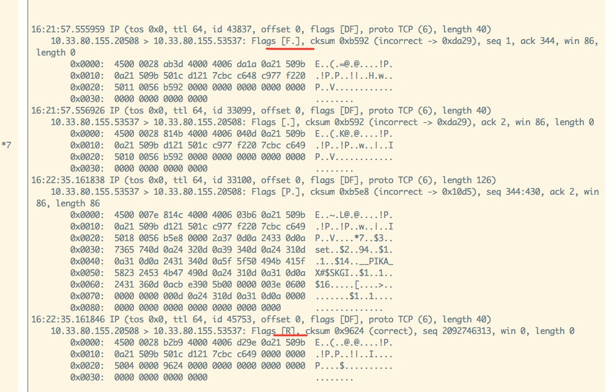
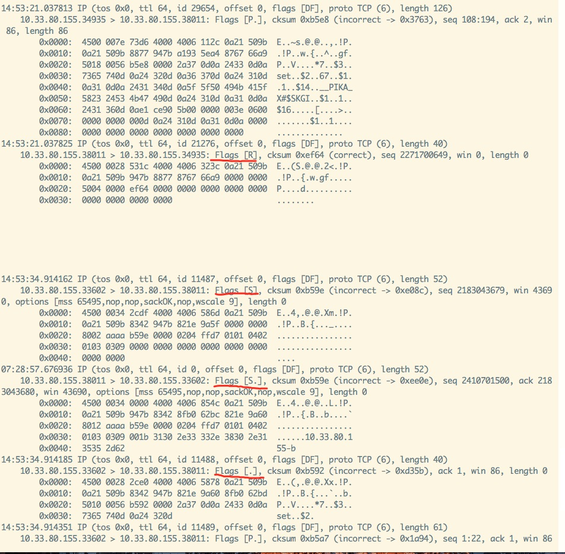
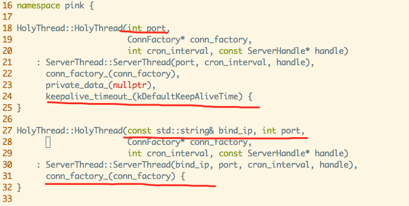

written by Alex Stocks on 2018/09/07，版权所有，无授权不得转载
愚人所在公司的大部分服务端业务无论是缓存还是存储颇为依赖 Codis，经过数次踩坑，其中一条经验教训是：线上 Redis 数据不要落地。
也就是说，我司的 Codis 集群中的 Redis，无论是 master 还是 slave，都没有打开 rdb 和 aof，所有数据都放在内存中。Codis 以这种方式“平静地”运行了一年，但是大伙终究心里石头无法落地，现状要求运维的同事在线上部署一种能高效运行且数据能落地的 “Codis”。
经交流和调研，今年七月份运维的同事决定采用 v2.3.x Pika 版的 Codis【下文提及的 Pika 不做特殊说明均指代 Pika 版本的 Codis 集群，pika 则指代单个 pika member】。在经过一段时间测试后，结果也令人满意：无论是在 SATA 盘还是 SSD 盘上，写【set，key 长度 16B， value 长度 30B】 qps 最差 60k/s，稳定情况下 80k/s，峰值可达 100k/s。于是 CTO 便拍板决定继续测试【到目前为止运维同事已经各种测试了两个月】，并根据公司以往的传统：使用开源系统，公司内部必须有人通读其代码，且能够解决掉在测试和线上遇到的问题。
最终这个“光荣任务”落在了愚人肩上。本文用来记录我阅读代码并在改进 Pika 【到 2018/09/07 为止主要是开发相关工具】过程中遇到的一些问题。
八月初运维的同事提出了一个需求：把 Pika 数据实时同步到 Codis 集群，即把 Pika 集群作为数据固化层，把 Codis 作为数据缓存层。
刚开始得到这个需求，愚人的实现思路是：
根据这个思路，借鉴参考文档1开始实现V1 版本的工具【模仿 redis-port，愚人命名为 pika-port】。但在开发到最后一步时遇到这个问题：pika 以 mmap 方式向磁盘写入 binlog，redis-port 只需要读 binlog，而一般存储系统的读速度最低 5 倍于写速递，当 redis-port 追上 pika 的最新 binlog 文件数据后， 很可能读到截断的脏数据！
因当时刚开始读 pika 代码，遇到这个无法解决坎后便只能放弃这个方案了【后来把pika/src/pikabinlogsender_thread.cc 详细读懂后已经找到了解决方法，但此时 pika-port V2版本已经开发完毕】。
V1 虽然半途而废，但是开发过程中遇到的两个问题比较有意思，V2 版开发时也需要处理，所以记录如下：
pika 的 binlog record 在每个 redis 写命令后面追加了四个额外信息，分别是：Pika Magic [kPikaBinlogMagic]、server_id【用于双 master 同步时做去重】、binlog info【主要是执行命令的时间】以及 send hub 信息，需要过滤掉；
代码详见 include/pika_command.h:Cmd::AppendAffiliatedInfo，修改后的 redis 命令
set A 1格式为*7\r\n$3\r\nset\r\n$1\r\nA\r\n$1\r\n1\r\n$14\r\n__PIKA_X#$SKGI\r\n$1\r\n1\r\n$16\r\nj[m\r\n$1\r\n1\r\n这些补充信息在跨机房数据同步的情况下也很有用，详细内容见参考文档7
pika 内部有一个特殊的 set 用于记录当前 migrate 信息，set key 前缀是 _internal:slotkey:4migrate:，这个在进行数据同步时也需要过滤掉；
V2 版本的 pika-port 相当于是 pika 和 Codis / Redis 之间的 proxy，实现流程是：
trysync 10.33.80.155 20847 0 0，10.33.80.155:20847 为 pika-port 的启动监听地址，后两个参数分别为 filenum 和 offset，同时监听 +1000 地址;spci sid指令，然后每个 1s 向 pika 发送 ping指令，并等待 pika 回复的 pong ack；auth sid 指令成功后，就循环解析 binlog 并把数据增量同步给 pika-port；整个流程需要对 pika 的主从复制流程非常熟悉，关于主从复制流程可以详细阅读参考文档2。目前 pika-port 已经开发完毕，支持 v2.3.6 版本的 pika数据实时迁移到 Codis/Redis。
在开发过程中遇到了一些坑，有的是自己对 pika 理解不透彻，有的是 pika 自身一些缺陷，下面详细分小节记录之，以备将来作参考之用。
Pika-port 与 pika 之间全量数据同步是通过 rsync 进行的，如果 pika-port 启动 rsync 失败【譬如rsync 监听端口被占用】，pika-port 所借鉴的 PikaTrysyncThread::ThreadMain 仅仅记录一个错误日志，然后继续相关流程。
合理的处理方法当然是启动 rsync daemon 失败退出即可，然官方相关处理流程如是，且出现这种错误概率极低，愚人处理方法就是暂时不处理这种 corner case。
Pika-port 会对 pika 发来的 redis 写指令进行非法性检查，过滤掉 command 为 auth 以及 key 为 _internal:slotkey:4migrate:前缀的非法指令。
在开发过程中，对非法指令的过滤是 MasterConn::DealMessage 处理的，过滤功能开发到是很简单，但是在开发测试过程中遇到这样一个坑：一旦 pika-port 遇到一个非法指令过滤掉后，pika 与 pika-port 之间的连接就断开发并疯狂重新建立连接。
经过对 RedisConn::ProcessInputBuffer 详细分析后才发现问题所在： MasterConn::DealMessage 遇到非法字符串后返回了一个负值作为错误标识，而 RedisConn::ProcessInputBuffer 调用这个函数后如果检测到结果是负值，就认为处理出错，最终会导致连接被关闭。
最终的解决方法当然是把返回结果改为 0 就可以了。
Pika-port V2开发完毕后测试过程中，遇到这样一个 corner case：通过 redis-cli 向 pika 写入 A 指令【譬如 set A 1】，在 60s 之后再次向 pika 写入 B 指令【譬如 set B 2】，然后立即写入 C 指令【譬如 set C 3】，最后 Codis/Redis 中只有 A 和 C 指令的数据，把 B 质量的数据丢了！
通过 tcpdump 在 pika 和 pika-port 之间进行抓包，分别得到如下两个关键结果【由于花费了半天时间不断重复测试以分析网络流程，所以两幅图时间先后有些错乱，不必较真】：

***图1: pika-port fin reset***
***图2: pika与pika-port 3 handshake***图1 是在 pika 向 pika-port 写入 B 指令时的网络流程，通过分析 图1 并结合相关代码分析，可以得到这样一个流程：
图2 则是 pika 向 pika-port 写入 C 指令的网络流程，同样分析后得到其流程是：
从 PikaTrysyncThread::ThreadMain 整个流程可以得出这样一个结论：pika 调用 write api 向 pika-port 写 B 指令的时候，并没有进行读操作以判断当前是否收到了 pika-port 发来的 rst 包，只是调用 write api 向 pika-port 进行了写，并根据其返回值为0就认为写成功了，进而理所当然的认为对端也能收到 B 指令。
可能有些对 tcp 四次挥手逻辑不甚明了的人对这个过程有些不甚了了，根本原因是 tcp 是双向连接，pika-port 只是关闭了 pika-port --> pika 这个方向的连接，而 pika --> pika-port 这个方向的单向连接还是存在的，只不过 pika-port 依赖的 pink 网络库在关闭一个单向连接时调用了 close 函数，导致结果是：pika-port 关闭了 pika-port --> pika 这个方向的连接的同时不再接收 pika --> pika-port 这个方向由 pika 发来的 B 指令数据！
解决问题的根本就在于正确处理 RST 信号，linux manpage 对 RST 信号的处理解释如下：
What happens if the client ignores the error return from readline and writes more data to the server? This can happen, for example, if the client needs to perform two writes to the server before reading anything back, with the first write eliciting the RST.
The rule that applies is: When a process writes to a socket that has received an RST, the SIGPIPE signal is sent to the process. The default action of this signal is to terminate the process, so the process must catch the signal to avoid being involuntarily terminated.
If the process either catches the signal and returns from the signal handler, or ignores the signal, the write operation returns EPIPE.上面很清晰的说明：写 B 指令时如果不读取 RST 相关错误信令，写 C 指令时 write 会返回 broken pipe 错误。所以正确的处理方法应该是：在进行 write 之前进行一次 read，以判断对端是否已经发来 fin 包；或者在 write 之后进行 read 以判断对端是否发来 rst 包。
考虑到 PikaTrysyncThread::ThreadMain 向 pika-port 发送数据的方式是 one way 的，pika-port 自身不会给 pika 回复任何消息，所以第二种方法成本略高。再考虑到这种情况是因为两个写指令之间写时间间隔太长所致，更进一步地处理方法是：每次调用 write 之后记录本次 write 执行的时间，下一次调用 write 时把系统当前时间与上一次 write 的时间进行比较，如果时间间隔超过某个阈值【譬如 1s】，则需要先进行读操作，判断出 pika-port --> pika 方向的连接正常，再调用 write 进行 pika --> pika-port 方向的数据写操作。
根据这个方案的相关改进代码写完，并已向 pika 官方提交了 pr，有待 merge。
在测试过程中，发现 pika 自身的 master 和 slave 进行数据复制时，并不会出现数据丢失的错误。经过加 log 分析，愚人在今日[2018/09/08] 下午 15:50pm 发现原因所在：pika slave 并不会对 pika master 之间的数据复制连接进行超时判断，仅仅依靠 tcp 自身的 KeepAlive 特性对连接进行保活【个人认为这种处理方法是不理智的】。至于代码层次原因，详见下图：

Pika-port 调用了上图第一个构造函数，直接导致 HolyThread::keepalivetime 参数被赋值 60，进而导致HolyThread::DoCronTask 超时检查逻辑被激活，然后 pika-port 与 pika 之间连接被 pika-port 关闭。
而 pika 自身则是调用上图的第二个构造函数，直接导致 HolyThread::keepalivetime 参数在被 gcc 编译时候被赋值 0，然后 pika slave 就不会去对它与 pika master之间连接作任何超时检查，所以也就不会出现丢数据的问题！
恰当的处理方法当然是重构两个构造函数，让其行为一致，然而作为著名项目的已有代码，相关改动牵一发而动全身，最终处理方法是我在 pr【对网络fd进行读写须用 recv，如果用 pread 则会收到 ESPIPE 错误】 中对相关函数所在的头文件中加上注释以进行调用提醒。
至于为何要依赖 tcp 自身的 keepalive 机制而不是在逻辑层对 tcp 连接进行超时判断，pika 开发者陈宗志给出了一个 blog 进行解释，仁者见仁智者见智，这个就不再次探讨了。
在处理这个问题时，与胡伟、郑树新、bert、hulk等一帮老友进行了相关探讨，受益匪浅，在此一并致谢！
Pika 官方 wiki [参考文档4] 有对其数据备份过程的图文描述，此文就就不再进行转述。
Ardb 作者对 Pika 的评价是 “直接修改了rocksdb代码实现某些功能。这种做法也是双刃剑，改动太多的话，社区的一些修改是很难merge进来的”【详见参考文档5】。与比较几个主流的基于 RocksDB 实现的 KV 存储引擎（如 TiKV/SSDB/ARDB/CockroachDB）作比较，Pika 确实对 RocksDB 的代码侵入比较严重。RocksDB 默认的备份引擎 BackupEngine 通过 BackupEngine::Open 和 BackupEngine::CreateNewBackup 即实现了数据的备份【关于RocksDB 的 Backup 接口详见 参考文档6 6.8节】，而 Pika 为了效率起见重新实现了一个 nemo::BackupEngine，以进行异步备份。
Pika 的存储引擎 nemo 依赖于其对 RocksDB 的封装引擎 nemo-rocksdb，下面结合参考文档4 从代码层面对备份流程进行详细分析。
注：本章描述的备份流程基于 pika 的 nemo 引擎，基本与最新的 blackwidow 引擎的备份流程无差。
nemo:DBNemoCheckpoint 提供了执行实际备份任务的 checkpoint 接口，其实际实现是 nemo:DBNemoCheckpointImpl，其主要接口如下：
class DBNemoCheckpointImpl : public DBNemoCheckpoint {
// 如果备份目录和源数据目录在同一个磁盘上，则对 SST 文件进行硬链接，
// 对 manifest 文件和 wal 文件进行直接拷贝
virtual Status CreateCheckpoint(const std::string& checkpoint_dir) override;
// 先阻止文件删除【rocksdb:DB::DisableFileDeletions】，然后获取 rocksdb:DB 快照，如 db 所有文件名称、
// manifest 文件大小、SequenceNumber 以及同步点(filenum & offset)
//
// nemo:BackupEngine 把这些信息组织为BackupContent
virtual Status GetCheckpointFiles(std::vector<std::string> &live_files,
VectorLogPtr &live_wal_files, uint64_t &manifest_file_size,
uint64_t &sequence_number) override;
// 根据上面获取到的 快照内容 进行文件复制操作
virtual Status CreateCheckpointWithFiles(const std::string& checkpoint_dir,
std::vector<std::string> &live_files, VectorLogPtr &live_wal_files,
uint64_t manifest_file_size, uint64_t sequence_number) override;
}CreateCheckpoint 接口可以认为是同步操作，它通过调用 GetCheckpointFiles 和 CreateCheckpointWithFiles 实现数据备份。
DBNemoCheckpointImpl::GetCheckpointFiles 先执行 “组织文件删除”，然后再获取 快照内容。
DBNemoCheckpointImpl::CreateCheckpointWithFiles(checkpoint_dir, BackupContent) 详细流程:
注：BackupCentent 中别的文件如 CURRENT、SST、Manifest 都是文件名称，唯独 WAL 文件传递了相关的句柄 LogFile。
基于 DBNemoCheckpoint，nemo:BackupEngine 提供了一个异步备份五种类型数据文件的接口，其定义如下：
// Arguments which will used by BackupSave Thread
// p_engine for BackupEngine handler
// backup_dir
// key_type kv, hash, list, set or zset
struct BackupSaveArgs {
void *p_engine;
const std::string backup_dir;
const std::string key_type;
Status res;
};
struct BackupContent {
std::vector<std::string> live_files;
rocksdb::VectorLogPtr live_wal_files;
uint64_t manifest_file_size = 0;
uint64_t sequence_number = 0;
};
class BackupEngine {
public:
~BackupEngine();
// 调用 BackupEngine::NewCheckpoint 为五种数据类型分别创建响应的 DBNemoCheckpoint 放入 engines_，
// 同时创建 BackupEngine 对象
static Status Open(nemo::Nemo *db, BackupEngine** backup_engine_ptr);
// 调用 DBNemoCheckpointImpl::GetCheckpointFiles 获取五种类型需要备份的 快照内容 存入 backup_content_
Status SetBackupContent();
// 创建五个线程，分别调用 CreateNewBackupSpecify 进行数据备份
Status CreateNewBackup(const std::string &dir);
void StopBackup();
// 调用 DBNemoCheckpointImpl::CreateCheckpointWithFiles 执行具体的备份任务
// 这个函数之所以类型是 public 的，是为了在 线程函数ThreadFuncSaveSpecify 中能够调用之
Status CreateNewBackupSpecify(const std::string &dir, const std::string &type);
private:
BackupEngine() {}
std::map<std::string, rocksdb::DBNemoCheckpoint*> engines_; // 保存每个类型的 checkpoint 对象
std::map<std::string, BackupContent> backup_content_; // 保存每个类型需要复制的 快照内容
std::map<std::string, pthread_t> backup_pthread_ts_; // 保存每个类型执行备份任务的线程对象
// 调用 rocksdb::DBNemoCheckpoint::Create 创建 checkpoint 对象
Status NewCheckpoint(rocksdb::DBNemo *tdb, const std::string &type);
// 获取每个类型的数据目录
std::string GetSaveDirByType(const std::string _dir, const std::string& _type) const {
std::string backup_dir = _dir.empty() ? DEFAULT_BK_PATH : _dir;
return backup_dir + ((backup_dir.back() != '/') ? "/" : "") + _type;
}
Status WaitBackupPthread();
};nemo::BackupEngine 对外的主要接口是 Open、SetBackupContent、CreateNewBackup 和 StopBackup，分别用于 创建 BackupEngine 对象、获取快照内容、执行备份任务和停止备份任务。
PikaServer::Bgsave 是 redis 命令 bgsave 的响应函数，通过调用 nemo::BackupEngine 相关接口执行备份任务，下面先分别介绍其先关的函数接口。
这个函数用于创建数据备份目录，其流程为：
%Y%m%d%H%M%S 格式序列化为字符串；pika.conf:dump-path/%Y%m%d，如果目录已经存在，则删除之；pika.conf:dump-path/_FAILED。注意上面第二步的备份目录，之所以最终目录只有年月日信息，是因为最终只用了前 8 个字符串作为目录名称。
这个函数用于创建 BackupEngine 对象并进行获取五种数据类型的快照内容，其流程为：
nemo::BackupEngine::Open 创建 nemo::BackupEngine 对象；PikaServer::rwlock_::WLock 进行数据写入 RocksDB::DB 阻止；nemo::BackupEngine:: SetBackupContent 获取快照内容；PikaServer::rwlock_::UnLock 取消数据写入 RocksDB::DB 阻止。PikaClientConn::DoCmd 在执行写命令的时候，会先调用 g_pika_server->RWLockReader() 尝试加上读锁，如果正在执行 Bgsave 则此处就会阻塞等待。
这个函数用于执行具体的备份任务，其流程为：
PikaServer::InitBgsaveEnv 初始化 BGSave 需要的目录环境；PikaServer:: InitBgsaveEngine 创建 nemo::BackupEngine 对象和获取快照内容；nemo::BackupEngine::CreateNewBackup 执行备份任务。这个函数是 Bgsave 线程的执行体，其流程为：
PikaServer::RunBgsaveEngine 执行数据备份；pika.conf:dump-path/%Y%m%d/info 文件；pika.conf:dump-path/%Y%m%d 重命名为 pika.conf:dump-path/%Y%m%d_FAILED；bgsave_info_.bgsaving 置为 false。作为命令 bgsave 的响应函数，其流程非常简单：
bgsave_info_.bgsaving 值为 true，则退出，否则把其值置为 true；PikaServer::bgsave_thread_，通过调用 PikaServer::DoBgsave 函数完成备份任务。Pika 存储引擎的最基本作用就是把 Redis 的数据结构映射为 RocksDB 的 KV 数据存入其中。本节主要分析 Pika 最新版的存储引擎 Blackwidow，作为对比需要稍微提及其前一个版本 Nemo。
Nemo 自身并不直接使用 RocksDB，而是使用 nemo-rocksdb - - - 一个对 RocksDB 进行了一层薄薄封装的存储层。
nemo-rocksdb 的主要类 DBNemo 继承自 rocksdb::StackableDB，用于替代 rocksdb::DB，主要作用是给 KV 的 Key 添加 timestamp 和 version 以及 Key 的类型信息，以实现 Redis 对数据的时限【称之为 ttl】要求：在 RocksDB 进行 compaction 的时候预先检查数据是否过期，过期则直接淘汰。
RocksDB 进行 compaction 的时候需要对每个 key 调用留给使用者的接口 CompactionFilter 以进行过滤：让用户解释当前 key 是否还有效。nemo-rocksdb 封装了一个 NemoCompactionFilter 以实现过时数据的检验，其主要接口是 rocksdb:CompactionFilter::Filter。RocksDB 在进行 compaction 还会调用另一个预备给用户的接口 rocksdb::MergeOperator，以方便用户自定义如何对同一个 key 的相关操作进行合并。
nemo-rocksdb 一并重新封装了一个可以实现 更新 意义的继承自 rocksdb::MergeOperator 的 NemoMergeOperator，以在 RocksDB 进行 Get 或者 compaction 的时候对 key 的一些写或者更行操作合并后再进行，以提高效率。至于 rocksdb::MergeOperator 的使用，见参考文档6。
相对于需要对 RocksDB 封装了一层的 nemo-rocksdb 的存储引擎 Nemo，Blackwidow 则更多地使用了 RocksDB 暴露出来的一些常用接口实现了 Redis 数据到 RocksDB KV 的映射。
Blackwidow 的数据组织格式与 Nemo 做了两个大的调整：
rocksdb::CompactionFilter 调用暴露给用户的接口 CompactionFilter::Filter 的时候，需要用户自己对相关数据的含义进行解释并处理，下面分小节介绍相关数据类操作。
basevalueformat.h:blackwidow::InternalValue 用于存储 string 类型的 Key 和 其他四种类型的 meta Key，其主要类成员如下：
class InternalValue {
public:
virtual size_t AppendTimestampAndVersion() = 0;
protected:
char space_[200];
char* start_;
Slice user_value_; // 用户原始 key
int32_t version_;
int32_t timestamp_;
};blackwidow::InternalValue 主要的接口是 Encode，其作用是把 key 的相关信息序列化成一个字节流，其工作流程如下：
key + timestamp + version 拼接后的总长度不大于 200B，则 InternalValue::start_ = InternalValue::space，即使用 InternalValue::space 存储序列化后的字节流，否则就在堆上分配一段内存用于存储字节流；key + timestamp + version 进行序列化并存入 InternalValue::start_。继承自 blackwidow::InternalValue 的 basemetavalue_format.h:BaseMetaValue 主要用于对 meta key进行序列化。
basevalueformat.h:blackwidow::ParsedInternalValue 用于对 string 类型的 Value 和 其他四种类型的 meta Value 进行反序列化，其主要类成员如下：
class ParsedInternalValue {
public:
// 这个构造函数在 rocksdb::DB::Get() 之后会被调用，
// 用户可能在此处对读取到的值修改 timestamp 和 version，
// 所以需要把 value 的指针赋值给 value_
explicit ParsedInternalValue(std::string* value) :
value_(value),
version_(0),
timestamp_(0) {
}
// 这个函数在 rocksdb::CompactionFilter::Filter() 之中会被调用，
// 用户仅仅仅对 @value 进行分析即可，不会有写动作，所以不需要
// 把 value 的指针赋值给 value_
explicit ParsedInternalValue(const Slice& value) :
value_(nullptr),
version_(0),
timestamp_(0) {
}
protected:
virtual void SetVersionToValue() = 0;
virtual void SetTimestampToValue() = 0;
std::string* value_;
Slice user_value_; // 用户原始 value
int32_t version_;
int32_t timestamp_;
};继承自 blackwidow::ParsedInternalValue 的 base_meta_value_format.h:blackwidow::ParsedBaseMetaValue 主要用于对 meta value 进行反序列化，需要注意的是 blackwidow::ParsedBaseMetaValue 多了一个 blackwidow::ParsedBaseMetaValue::count_ 成员，用于记录集合中成员【field/field】的数目，这个数值一般位于字节流的前四个字节。
继承自 rocksdb::CompactionFilter 的 base_filter.h:blackwidow::BaseMetaFilter 在调用其 Filter 接口的时候，就使用 blackwidow::ParsedInternalValue 对 meta value 进行了解析处理，其工作流程如下：
使用 blackwidow::BaseMetaFilter 的 blackwidow::BaseMetaFilterFactory 会被设置为 hashtable/set/zset 三种数据结构 meta ColumnFamily 的 ColumnFamilyOptions 的 compactionfilterfactory。
basedatakey_format.h:blackwidow::BaseDataKey 用于存储 hashtable/zset/set 三种类型 Data ColumnFamily 的 Key【下文称为 data key】，其主要类成员如下：
class BaseDataKey {
public:
const Slice Encode();
private:
char space_[200];
char* start_;
Slice key_; // hashtable/zset/set key
int32_t version_;
Slice data_; // field/member
};blackwidow::BaseDataKey 主要的接口是 Encode，其作用是把 KV Key 的相关信息序列化成一个字节流，其工作流程如下：
key size(4B) + key + version + field 拼接后的总长度不大于 200B，则 BaseDataKey::start_ = BaseDataKey::space，即使用 InternalValue::space 存储序列化后的字节流，否则就在堆上分配一段内存用于存储字节流；basedatakey_format.h:blackwidow::ParsedBaseDataKey 用于对 hashtable/zset/set 三种类型的 data key 进行反序列化，其主要类成员如下：
class ParsedBaseDataKey {
protected:
Slice key_;
int32_t version_;
Slice data_;
};其主要反序列化解析动作在构造函数中完成，此处就不再详细分析其工作流程。
继承自 rocksdb::CompactionFilter 的 base_filter.h:blackwidow::BaseDataFilter 主要用于对 data KV 进行解析，其主要成员如下：
class BaseDataFilter {
private:
rocksdb::DB* db_; // 所在的 DB
std::vector<rocksdb::ColumnFamilyHandle*>* cf_handles_ptr_; // 所在的 ColumnFamily
rocksdb::ReadOptions default_read_options_;
mutable std::string cur_key_;
mutable bool meta_not_found_;
mutable int32_t cur_meta_version_;
mutable int32_t cur_meta_timestamp_;
};在调用其 Filter 接口的时候，就使用 blackwidow::ParsedBaseDataKey 对 data key 进行了解析处理，其工作流程如下：
2 若 curkey 与 hashtable/zset/set key 不相等，则从 meta ColumnFamily 中获取 hashtable/zset/set 对应的 meta value；
3 获取系统当前时间；
4 若 curmetatimestamp_ 不为零 且 curmetatimestamp_ 小于 系统当前时间，则数据可以淘汰；
5 若 data key 的 version 小于 curmetaversion_，则数据可以淘汰；
6 否则数据仍然有效，不能淘汰。
使用 blackwidow::BaseDataFilter 的 blackwidow::BaseDataFilterFactory 会被设置为 hashtable/set/zset 三种数据结构 data ColumnFamily 的 ColumnFamilyOptions 的 compactionfilterfactory。
不同于其他四种数据结构，Strings 因其数据结构比较简单，不需要 meta 数据，所以的数据直接存入默认的 ColumnFamily，相关的 Blackwidow 类在此节单独列明。
stringsvalueformat.h:blackwidow::StringsValue 继承自 blackwidow::InternalValue，其作用自然是序列化 KV value，其主要接口 AppendTimestampAndVersion 代码如下：
class StringsValue : public InternalValue {
public:
explicit StringsValue(const Slice& user_value) :
InternalValue(user_value) {
}
virtual size_t AppendTimestampAndVersion() override {
size_t usize = user_value_.size();
char* dst = start_;
memcpy(dst, user_value_.data(), usize);
dst += usize;
EncodeFixed32(dst, timestamp_);
return usize + sizeof(int32_t);
}
};从上面代码可以看出，Strings 没有 version 概念。
stringsvalueformat.h:blackwidow::ParsedStringsValue 继承自 blackwidow::ParsedInternalValue，其作用自然是反序列化 KV value，获取 V 与 timestamp。
继承自 rocksdb::CompactionFilter 的 strings_filter.h:blackwidow::StringsFilter 通过 blackwidow::ParsedStringsValue 对 Strings KV 进行解析，其 Filter 接口依据 V 中的 timestamp 与系统当前时间进行比较，如果 V 的 timestamp 小于系统当前时间，则数据过时可以淘汰。
使用 blackwidow:: StringsFilter 的 blackwidow::StringsFilterFactory 会被设置为 Strings 的 default ColumnFamily 的 ColumnFamilyOptions 的 compactionfilterfactory。
2018/09/07，于雨氏，初作此文于西二旗。
2018/09/15，于雨氏，于西二旗添加第二节 “数据备份”。